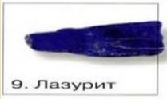

Стоит ли вкладывать деньги в драгоценные металлы
[золото, серебро, платина, палладий]?
Былое
Золото известно человечеству с древних времен. Золотые изделия неоднократно находили в древних захоронениях. Издревле этот металл был символом богаства и власти, поэтому он становился причиной грабежей, убийств и даже войн.
Современность

Известны следующие драгоценные металлы:
- Золото
- Серебро
- Платина
- Родий
- Осмий
- Иридий
- Рутений
- Палладий
ЦБ РФ - Курсы драгметаллов
| Дата | Золото руб./грамм |
Серебро руб./грамм |
Платина руб./грамм |
Палладий руб./грамм |
|---|---|---|---|---|
| 2003 | 353.80 | 4.91 | 619.28 | 232.94 |
| 2006 | 496.80 | 8.17 | 863.98 | 232.94 |
| 2009 | 817.77 | 10.23 | 849.52 | 173.4 |
| 2012 | 1667.25 | 29.56 | 1495.09 | 648.66 |
| 2015 | 2041.25 | 29.96 | 2600.47 | 1496.26 |
| 2018 | 2456.67 | 30.18 | 1684.62 | 1719.79 |
Драгоценные и полудрагоценные камни
Кроме драгоценных металлов во все времена существования на земле ценились и драгоценные камни. Список которых всегда состоял из многих пунктов, являлись признаком богатства. Драгоценные камни олицетворяли собой наличие высокого социального положения. Сотни лет назад в некоторых странах существовал закон, согласно которому драгоценные украшения могли надевать только лица высшей элиты. Сегодня, если у семьи имеется списко драгоценных камней, то она и богатая и престижная.
Некоторые драгоценные и полудрагоценные камни
